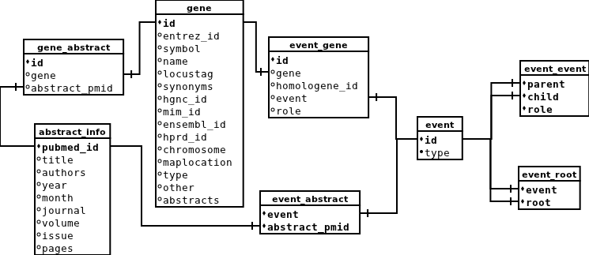

GADGET 2013 documentation
- GADGET overview
- Running GADGET
- Deploying GADGET
- Code notes
- Directory structure
- Data overview
- The automatic data updater
GADGET is a system that allows users to search through literature related to genes. It has two main facets, a gene search which allows users to find genes related to a text query, and an event search which lets users find automatically-extracted "events" related to genes and abstracts.
Please read the GADGET user manual for a more general overview before you read this document. The user manual can be found under www/manual.html. (To get the page to look nicer, link it to static/base.css or just use the version on the web server.
GADGET is written mostly in Python 2.7, using the Django framework and a MySQL database.
If you make changes to GADGET, please keep this documentation file up-to-date.
Back to top Running GADGETRun GADGET locally on your computer to develop and test out changes before you push them to the web server. Django comes with a built-in web server that you can use to easily get GADGET running without installing Apache. (You should not deploy using the Django server though, because it is inefficient and probably insecure. You should deploy using Apache.)
GADGET and all of its dependencies are (in theory) platform agnostic, so you should be able to run GADGET on any of the popular operating systems. GADGET was developed on an Ubuntu 10.10 virtual machine, and is deployed on a Linux server.
To run GADGET, copy the GADGET directory to your machine, install all of the gadget dependencies. You will probably need to make some simple edits to the configuration files. In a terminal, move to the genetext folder which contains the Django app, and enter python manage.py runserver. You should then be able to point your browser to http://localhost:8000/ and see the GADGET front page.
If you're having problems starting the server, the "manage.py" script has a number of options that might help. To see them, enter python manage.py or python manage.py help runserver.
See here for building the database tables.
Back to top Git repositoryThe GADGET code is tracked in a Git repository on the biostat file server in /u/ml-group/information_extraction/gadget/git. You can read about Git here.
You can create a copy of GADGET on your own machine by running git clone /u/ml-group/information_extraction/gadget/git gadget. To commit your changes, run git add . followed by git commit. To push your changes to the repository on the file server, run git push origin master after committing. If someone else has made changes to the repository on the file server, you can update your copy by running git pull.
Back to top Local dependenciesTo run GADGET in a development environment, the following libraries are required. Most can be easily installed as python packages. If you're using a Linux distribution with package management, most can also be found in distribution repositories.
The version numbers listed here were the versions used to initially develop and deploy GADGET, but other versions will work for many dependencies. (Note that if you use a different version of Whoosh, you will need to re-build the index.)
All of the python modules should be added to the python path, so python knows where to find them.
GADGET dependencies- Python 2.7
- Django 1.2.5 — web framework
- MySQL Server 5.1
- Whoosh 2.0 — searchable text index
- numpy 1.5.1 — required by Matplotlib and Networkx
- Matplotlib 0.99.3 — plotting event graphs
- NetworkX 1.1 — plotting event graphs
- rpy2 2.1.9 — calculating p values in gene search
- MySQLdb 1.2.2 — talking to the database
- Memcached 1.4.5 — index search and event caching (optional, see local configuration)
- python-memcached 1.45 — (optional, see local configuration)
The settings that you need to edit to run GADGET are collected into 2 files: genetext/settings.py and genetext/urls.py. Settings.py includes most of the general parameters for the Django application, and you can read about it here. Urls.py tells Django how to rout URLs to functions in the application, and you can read about it here.
There are a couple things you need to do in the settings to run GADGET locally. (Do not use these settings to deploy GADGET, see deployment configuration).
First, in settings.py, make sure that DEBUG and TEMPLATE_DEBUG are set to True. This will tell Django to show you helpful error pages when something goes wrong, instead of a generic 500 page.
Second, there are a couple paths to directories that you need to set. These are required to be absolute paths, so they must be set every time a GADGET instance is created.
In settings.py, set the path in TEMPLATE_DIRS to the folder containing the HTML templates. It should be genetext/templates in the GADGET directory. Also in settings.py, set ABSTRACT_INDEX_PATH to the directory containing the Whoosh index of abstracts. It should be index/abstracts in the GADGET directory. Set GENE_INDEX_PATH to the absolute path to the Whoosh index of genes (index/genes).
Third, you need to tell urls.py where to find static files. Urls.py should include the lines:
(r'^$', 'django.views.static.serve', {'document_root': 'PATH/gadget/www', 'path':'index.html'}),
(r'^(?P
Fourth, make sure that all of the URL patterns in the urlpatterns tuple of urls.py have "gadget/" stems. Eg. the pattern for the geneview.search view should be r'^gadget/genesearch' instead of r'^genesearch'.
Fifth, set DATABASES in settings.py with information about how to connect to the database. You need to provide the NAME of the database, USER, PASSWORD, HOST, and PORT.
Finally, you need to configure the cache. If you want to enable the cache, (recommended,) set the CACHES dict in settings.py to include:
'BACKEND': 'django.core.cache.backends.memcached.MemcachedCache',
'LOCATION': '127.0.0.1:11211',
}
'BACKEND': 'django.core.cache.backends.dummy.DummyCache',
}
To deploy GADGET, copy the GADGET directory (containing genetext, index, static, and www) directories to the web server. Set up Apache to serve static files in the "static" folder with the "/static/" stem, and to serve static files from "www" folder as the root. (E.g. "gadget.biostat.wisc.edu/static/base.css" should point to "static/base.css", and "gadget.biostat.wisc.edu/index.html" should point to "www/static.html".)
Set up Apachi and mod-wsgi to serve the Django application in the "genetext" folder using the "/gadget/" stem. More information about the WSGI configuration can be found in the/web/gadget folder of the file server. Send an email to the system administration folks for help.
The Apache http server should run as its own separate user, so make sure that the user has access to all of the GADGET files.
To set up the database, dump the tables abstract_info, event, event_abstract, event_event, event_gene, event_root, gene, and gene_abstract, keyphrase, keyphrase_abstract, and keyphrase_genecounts and re-create them on the server. Set up a separate user for GADGET with select-only privileges on these tables. The database user needs insert privilages on the uploaded_gene and uploaded_genefile tables. See here for building the database tables.
If you are using a different version of Whoosh on the server than on your local copy, you will probably need to re-build the index on the server.
Back to top Deployment dependenciesA deployment of GADGET on a web server requires all of the dependencies required by a local instance. Memcached and python-memcached are optional for a local installation, but strongly recommended for a server deployment (they're easy to set up, and will significantly speed everything up.)
Two additional dependencies are:
- Apache http web server
- modwsgi — python WSGI adapter module for Apache
To deploy GADGET, some settings in the configuration files (genetext/settings.py and genetext/urls.py) need to be different than for a local deployment. There should be separate deployment copies of the config files in the GADGET directory, that you can rename to settings.py and urls.py.
First, in settings.py, make sure that DEBUG and TEMPLATE_DEBUG are set to False. This will cause Django to issue a normal 500 page on an error, instead of showing a stack trace (which could be a security risk.)
Second, there are a couple paths to directories that you need to set. These are required to be absolute paths, so they must be set every time a GADGET instance is created.
In settings.py, set the path in TEMPLATE_DIRS to the folder containing the HTML templates. It should be genetext/templates in the GADGET directory. Also in settings.py, set ABSTRACT_INDEX_PATH to the directory containing the Whoosh index. It should be index/abstracts in the GADGET directory. Set GENE_INDEX_PATH to the absolute path to the Whoosh index of genes (index/genes).
Third, Django should not be set up to serve static files. (It's much more efficient and secure to serve static files with the Apache http server.) In the urlpatterns tuple of urls.py, comment out every line that contains django.views.static.serve.
Fourth, make sure that the URL patterns in the urlpatterns tuple of urls.py do not have "gadget/" stems. Eg. the pattern for the geneview.search view should be r'^genesearch' instead of r'^gadget/genesearch'.
Fifth, set DATABASES in settings.py with information about how to connect to the database. You need to provide the NAME of the database, USER, PASSWORD, HOST, and PORT.
Finally, you need to configure the cache. When deploying GADGET, you should use the cache. Set the CACHES dict in settings.py to include:
'BACKEND': 'django.core.cache.backends.memcached.MemcachedCache',
'LOCATION': '127.0.0.1:11211',
}
To make updates to the GADGET server, you need to restart the Apache http server. To start an update, first shut the server off with:
Copy your updates to the server, and re-start the server with:
The Apache http server runs as its own separate user, so the apache user needs access to all of the GADGET files and folders. When you copy something into a GADGET directory use ls -l to make sure that the group has read privileges (the 5th character in each row should be an 'r' and not a '-'.) To grant read privileges on a file or directory to a group, use:
The genetext folder in the GADGET directory contains the Django application, which is made up of python code and html/javascript files. Get familiar with Django before making modifications to GADGET.
The code that does all the data processing is in the genetext/geneview and genetext/eventview directories. When an http request is made to GADGET, Django uses genetext/urls.py to map the request to a python function, and then executes the function, which generates and returns a response.
The models.py files in genetext/geneview and genetext/eventview define some of the same tables. If you make changes to any of the database tables, modify the entry for the table in both files.
The python module that accesses the text index, genetext/geneview/index.py is part of the "geneview" app, but the "eventview" app uses it as well.
Back to top Directory structure- docs — documentation (including this file)
- genetext — Django application
- eventview
- event.py — functions for fetching events and information about events from the database, event graph plotting
- eventview.py — "views", functions that interact with the web.
- __init__.py
- models.py — information about the database schema (some overlap with genetext/geneview/models.py
- geneview
- geneview.py — "views", functions that interact with the web. This file does most of the heavy lifting for the gene search.
- __init__.py
- models.py — information about the database schema (some overlap with genetext/eventview/models.py
- genecrossrefs.py — the "external links" pane in gene search results
- keyphraseview
- keyphraseview.py — the keyphrase search (imports a lot of stuff from the gene search modules)
- models.py — database schema used by keyphraseview.py
- abstracts
- abstracts.py &mdash the "abstract viewer" pane in the gene search, keyphrase search, and event/interaction search
- index.py — functions for querying the text index of abstracts.
- models.py — the database schema used by the files in this "abstracts" folder
- __init__.py
- geneindex
- geneindex.py — code that uses the Whoosh gene index to match up gene ID's with a user's gene query in the keyphrase search and gene search
- fileupload.py — deals with user-uploaded lists of genes
- models.py — database schema used by the files in this folder
- operatorwidget.py — not used for anything
- __init__.py
- templates — used for rendering web pages
- abstracts.html — for listing abstract citations, used by both gene search and event search
- abstractview.html — a "container" for abstracts.html, having the controls to filter the abstracts
- base.html — genesearch.html and eventsearch.html extend this template.
- eventgenes.html — table for "genes referenced in these events", used by event search
- eventlist.html — table rows for event search results
- eventpreview.html — event "previews" shown in gene search results in abstract pane - currently broken and turned off, because the event search doesn't support all of the types of queries that the gene search does
- eventsearch.html — bare event search page, doesn't include results
- eventsummary.html — a table loaded by the event search that shows combinations of genes occurring in the results
- genecrossrefs.html — the list of "external links" for each gene in the gene search results
- genefileupload.html — the form that pops up when you click the "upload a list of genes" link in the gene search and keyphrase search
- genelist.html — table rows for gene search results
- genelist.xml — XML representation of gene search results (event search XML does not use a template).
- genesearch.html — bare gene search page, doesn't include results
- keyphraselist.html — table rows for keyphrase search results
- keyphraselist.xml — for generaring XML downloads of keyphrase search results
- keyphrasesearch.html — bare keyphrase search page without results
- __init__.py
- manage.py — Django-provided utility script
- settings.py — configuration for django project. See local configuration or deployment configuration. Ignored by git.
- settings.py.example.development — example settings file for running gadget on your development machine
- settings.py.example.webserver – example settings for deploying GADGET to a web server
- urls.py — routs incoming urls to python functions / Django views. See local configuration or deployment configuration. Ignored by git.
- urls.py.example.development — example urls.py file for running GADGET on your development machine.
- urls.py.example.webserver — example urls.py for deploying GADGET to a web server.
- eventview
- index
- absracts — contains the Whoosh index of abstracts
- genes — contains the Whoosh index of genes
- static
- events — example event images
- abstracts.py — script used by abstract viewer pane in results
- base.css — loaded by all pages
- base.js — loaded by base.html template
- document.png — old, not currently used for anything
- eventlist.dtd — DTD describing event search XML results
- eventsearch.js — script used by event search
- genelist.dtd — DTD describing gene search XML results
- genesearch.js — script used by gene search
- interaction.png — old, not currently used for anything
- jquery-1.6.1.min.js — loaded by base.html template
- keyphrasesearch.js — script used by keyphrase search
- links.png — old, not currently used for anything
- logo-big.png — used on the front page
- logo-small.png — used at the top of gene search, event search, and keyphrase search pages
- spinner.gif — used in search pages
- spinner2.gif — old, not currently used for anything
- updater — scripts that automatically update some of the data in the database
- config.py — settings for the update script
- update.py — called every night by the "cron" user on the server, downloads and updates data in the database
- abstractqueries.py, buildindex.py, fetchabstracts.py, load_gene_abstract_links.py — modules used by update.py
- clear_uploaded_files.py — called by update.py, deletes old uploaded files from the database
- mergeindex.py — merges together segments of the Whoosh abstract index. takes a long time, but results in faster queries. called once a week by the cron user on the server.
- dirty-abstract-trigger.sql — trigger applied to the database to mark abstracts as needing to be re-indexed when new associated genes are added
- util — not part of the application, useful scripts for setting up the data
- www — static pages to be served from the root directory
- contact.html
- index.html
- manual.html
GADGET uses data about genes, abstracts, and events. The data lives in 2 places: a MySQL database, and a two searchable text indices.
The database and whoosh indices are dumped in /u/ml-group/information_extraction/gadget/db
.
The MySQL database contains a table of genes with descriptive information, a table of abstract information, and tables containing events. The actual text of the abstracts is not stored in the database. The events have tree structures, and the relationships between events are represented by self-joins through an intermediate table.
There are two text indices that use the Whoosh library: one for abstracts and one for genes. The abstract index keeps track of the title, abstract text, year, and PubMed ID of each abstract. The abstract index returns a list of abstracts which match a given text query. It is also capable of spell checking, and keyword-finding for a set of abstracts. The gene index stores gene symbols and their Entrez ID's.
Back to top Data sourcesData used by GADGET comes from the NCBI FTP site, Entrez PubMed interface, and Turku EVEX dataset.
- gene2pubmed.gz – link genes to abstracts
- gene_history.gz – link deprecated gene ID's to current gene ID's
- homologene.data – link human genes to homologous genes in other species
- Homo_sapiens.gene_info.gz – descriptive information about gemes
Event data from the Turku group can be downloaded here. GADGET's database is derived from the Homologene and occurrence databases. The documentation for the data set can be found here.
PubMed abstracts are fetched using a script. See here.
Back to top Database schemaThe database keeps track of genes, events, and abstract information. (In diagram primary keys are bold, all relationships are one-to-many, tick mark on relationship line indicates "many".)
Table definitions:
CREATE TABLE `gadget`.`abstract_info` ( `pubmed_id` int(11) NOT NULL, `title` varchar(300) DEFAULT NULL, `authors` varchar(300) CHARACTER SET utf8 DEFAULT NULL, `year` smallint(6) DEFAULT NULL, `month` char(3) DEFAULT NULL, `journal` varchar(150) DEFAULT NULL, `volume` smallint(6) DEFAULT NULL, `issue` smallint(6) DEFAULT NULL, `pages` varchar(30) DEFAULT NULL, PRIMARY KEY (`pubmed_id`) ) ENGINE=MyISAM DEFAULT CHARSET=latin1
CREATE TABLE `gadget`.`event` (
`id` int(20) unsigned NOT NULL DEFAULT '0',
`type` enum('Localization','Binding','Gene_expression','Transcription',
'Protein_catabolism','Phosphorylation','Regulation','Positive_regulation',
'Negative_regulation') CHARACTER SET utf8 NOT NULL,
PRIMARY KEY (`id`)
) ENGINE=MyISAM DEFAULT CHARSET=latin1
CREATE TABLE `gadget`.`event_abstract` ( `event` int(20) unsigned NOT NULL DEFAULT '0', `abstract_pmid` int(20) unsigned NOT NULL DEFAULT '0', PRIMARY KEY (`event`,`abstract_pmid`), KEY `event` (`event`), KEY `abstract_pmid` (`abstract_pmid`) ) ENGINE=MyISAM DEFAULT CHARSET=latin1
CREATE TABLE `gadget`.`event_event` (
`parent` int(20) unsigned NOT NULL DEFAULT '0',
`child` int(20) unsigned NOT NULL DEFAULT '0',
`role` enum('Cause','Theme') CHARACTER SET utf8 NOT NULL,
PRIMARY KEY (`parent`,`child`,`role`),
KEY `parent` (`parent`),
KEY `child` (`child`)
) ENGINE=MyISAM DEFAULT CHARSET=latin1
CREATE TABLE `gadget`.`event_gene` (
`id` int(11) NOT NULL AUTO_INCREMENT,
`gene` int(11) NOT NULL DEFAULT '0',
`homologene_id` mediumint(6) unsigned NOT NULL,
`event` int(20) unsigned NOT NULL DEFAULT '0',
`role` enum('Cause','Theme') CHARACTER SET utf8 NOT NULL,
PRIMARY KEY (`id`),
KEY `gene` (`gene`),
KEY `event` (`event`)
) ENGINE=MyISAM AUTO_INCREMENT=254738 DEFAULT CHARSET=latin1
CREATE TABLE `gadget`.`event_root` ( `event` int(11) unsigned NOT NULL DEFAULT '0', `root` int(11) NOT NULL DEFAULT '0', PRIMARY KEY (`root`,`event`), KEY `root` (`root`), KEY `event` (`event`) ) ENGINE=MyISAM DEFAULT CHARSET=latin1
CREATE TABLE `gadget`.`gene` ( `id` int(11) NOT NULL AUTO_INCREMENT, `entrez_id` int(11) DEFAULT NULL, `symbol` varchar(30) CHARACTER SET utf8 DEFAULT NULL, `name` varchar(250) CHARACTER SET utf8 DEFAULT NULL, `locustag` varchar(100) CHARACTER SET utf8 DEFAULT NULL, `synonyms` varchar(250) CHARACTER SET utf8 DEFAULT NULL, `hgnc_id` int(11) DEFAULT NULL, `mim_id` int(11) DEFAULT NULL, `ensembl_id` int(11) DEFAULT NULL, `hprd_id` int(11) DEFAULT NULL, `chromosome` varchar(7) CHARACTER SET utf8 DEFAULT NULL, `maplocation` varchar(100) CHARACTER SET utf8 DEFAULT NULL, `type` varchar(20) CHARACTER SET utf8 DEFAULT NULL, `other` varchar(800) CHARACTER SET utf8 DEFAULT NULL, `abstracts` bigint(21) NOT NULL DEFAULT '0', PRIMARY KEY (`id`), KEY `entrez_id` (`entrez_id`) ) ENGINE=MyISAM AUTO_INCREMENT=30938 DEFAULT CHARSET=latin1
CREATE TABLE `gadget`.`gene_abstract` ( `id` int(11) NOT NULL DEFAULT '0', `gene` int(11) NOT NULL DEFAULT '0', `abstract_pmid` int(11) NOT NULL DEFAULT '0', PRIMARY KEY (`id`), KEY `gene` (`gene`), KEY `abstract_pmid` (`abstract_pmid`) ) ENGINE=MyISAM DEFAULT CHARSET=latin1
The gene table contains descriptive information about all of the genes in the GADGET system. Only genes which are linked to abstracts through the gene2pubmed file are included.
The abstract_info table contains metadata about each abstract, but does not contain the actual text of the abstracts. Only abstracts which are linked to a gene through the gene2pubmed file are included. Genes are linked to abstracts through the gene_abstract table.
Events are stored in the event table. Events have complex tree-like relationships, which are described in the event_event table. The event_root table speeds up querying of these complex events, by linking each event to its "root" event in the tree structure. Many events are sub-events of more than one complex event, so they have more than one root. Events which are themselves root events have a link to themselves through the event_root table.
Events are linked to their component genes through the event_gene, and to their containing abstracts through the event_abstract table.
Back to top Building the databaseThe database and whoosh indices are dumped in /u/ml-group/information_extraction/gadget/db. You can use the dumped files to set up the database, or there are some instructions that you should be ebla to use to build it from scratch.
SQL queries for building the GADGET database are located in docs/database setup instructions.txt.
The database user account that GADGET uses needs to have select privilages on all tables in the database, and insert privilages on the uploade_gene and uploaded_genefile tables.
Build the gene_abstract table first, so we can later use it to restrict the entries in the gene and abstract_info tables. The gene_abstract table contains data from the gene2pubmed file (see above). Use the gene_history file to link old deprecated gene ID's to current ID's. Use homologene.data to link non-human homologous genes to human genes. Remove records for abstracts that refer to more than 1000 genes (to knock out some GWA papers). Then restrict the records in the table to human genes (tax = 9606).
Build the gene table next. Load the gene_info into a database table, and then restrict the genes to those included in the gene_abstract table.
The gene_info file contains a `dbxrefs` field with other database ID's concatenated into a string (the name of this field should be `dbxrefs` in the table.) To separate them, create integer `hgnc_id`, `mim_id`, `ensembl_id`, and `hprd_id` fields, and a boolean `dbxrefs_split` field which defaults to false. Open util/splitlinks.py and edit the connection parameters near the top to correctly connect to the database. Run util/splitlinks.py to split the links into the 4 new fields.
The event side of the database is derived from the MySQL tables in the EVEX dataset. It's a bit complicated to construct, and is documented in more detail in docs/database setup instructions.txt with SQL for building the tables.
In a nutshell, start by building the event_event table to keep track of parent-child relationships. Use event_event to find the root events for each event, and keep track of them in event_root. Create the event table using only events referenced in event_event. Link events to abstracts through event_abstract, and remove any events that can't be linked to our abstract set. Likewise, link genes to abstracts through event_gene and remove events that include genes not in the gene table.
Back to top Fetching abstractsAbstracts are fetched from PubMed via Entrez using a python script. To run the script, you need the MySQLdb python module installed. The script reads from a database table of abstracts to find abstracts with a null "updated" field, then fetches them from Entrez and updates the table rows.
First, set up the abstract table in the database. After having set up the gene_abstract table, (see above), create a new abstract table by selecting distinct abstract PMID's from gene_abstract. Then add columns to the table so it matches the following definition:
CREATE TABLE `gadget`.`abstract_info` ( `pubmed_id` int(11) NOT NULL, `title` varchar(300) DEFAULT NULL, `abstract` text DEFAULT NULL, `authors` varchar(300) CHARACTER SET utf8 DEFAULT NULL, `year` smallint(6) DEFAULT NULL, `month` char(3) DEFAULT NULL, `journal` varchar(150) DEFAULT NULL, `volume` smallint(6) DEFAULT NULL, `issue` smallint(6) DEFAULT NULL, `pages` varchar(30) DEFAULT NULL, PRIMARY KEY (`pubmed_id`) ) ENGINE=MyISAM DEFAULT CHARSET=latin1
Make sure that the `authors` column has a unicode encoding to avoid garbling authors' names with special characters.
Open up util/fetchabstracts.py and edit the connection parameters near the top of the file to connect to the database. Run the script to fetch abstracts and update the table. The scripts fetches 200 abstracts at a time, but that rate can be changed by altering the size parameter of the ids function.
The script prints a line with the total number of abstracts fetched so far every time it updates the database. It will probably take a couple hours to grab all of them, but you can kill and re-start the script and it will pick up where it left off.
The text of the abstracts takes up a lot of space, so use the abstract table to build the text index, and then create an abstract_info table by selecting every column except for `abstract`.
Back to top Building the text indexTo build the text index, you need to have first fetched the abstracts from PubMed into a database table called abstract. The text index is built using a python script.
The script will index all abstracts in the abstract table which have a non-null `updated` date, and a null `indexed` date or an `updated` date that is more recent than the `indexed` date.
Open up util/buildindex.py in a text editor. Near the top of the file, edit ABSTRACT_INDEX_PATH so it contains the path to the index directory (should be 'gadget/index', can be relative, the directory must already exist). Right under that, edit the database connection parameters so the script can connect to the database that contains the abstract table.
If there is not an index present in the ABSTRACT_INDEX_PATH directory, the script will create a new index. If there is already an index in the directory, the script will add abstracts to the existing index.
Run the script. If there is a large number of un-indexed abstracts, the script will probably take a couple hours to run. You can kill the script and re-start it, and it will pick up where it left off. It commits the index after every 10,000 new articles, and prints a line after each commit. After adding all of the abstracts, the index merges and optimizes the index, which may take a long time.
Back to top The automatic data updaterGADGET has a script that automatically updates data for the gene search. You can find it in the folder called updater in the gadget source, or in /web/gadget/updater on the web server.
The file update.py gets called by a cron job every night (by the cron user account on the web server.) Update.py does the following things:
- Downloads new gene-abstract links from gene2pubmed, MGI, and SGD
- The mysql trigger in dirty-abstract-trigger.sql markes abstracts with new gene abstract links
- Removes abstracts with more than 1000 genes
- Fetches the text of new abstracts from pubmed
- Removes abstracts that couldn't be fetched
- Populates the "homologene_gene_abstract" table
- Updates the Whoosh index with the new abstracts
- Checks some counts to make sure that everything worked
- Counts abstracts for each gene and updates the "gene" table
- Clears old uploaded files from the database
The file "config.py" has some settings about where to store downloaded files, where to put the logs, where the Whoosh index is, and how to connect to the database. The updater script keeps logs every time it runs to track its progress (you can find them by looking in the config file for their location.)
The "updater" user account that the script uses needs the following database privaleges:
+------------------------------------------------------------------------------+
| Grants for updater@% |
+------------------------------------------------------------------------------+
| GRANT FILE ON *.* TO 'updater'@'%' |
| GRANT SELECT, DELETE ON `gadget`.`uploaded_genefile` TO 'updater'@'%' |
| GRANT SELECT, INSERT, UPDATE, DELETE ON `gadget`.`abstract` TO 'updater'@'%' |
| GRANT SELECT ON `gadget`.`homologene_gene` TO 'updater'@'%' |
| GRANT SELECT ON `gadget`.`mgi_entrez_gene` TO 'updater'@'%' |
| GRANT SELECT, INSERT ON `gadget`.`removed_abstracts` TO 'updater'@'%' |
| GRANT SELECT, DELETE ON `gadget`.`uploaded_gene` TO 'updater'@'%' |
| GRANT SELECT ON `gadget`.`sgd_xrefs` TO 'updater'@'%' |
| GRANT SELECT, INSERT, DELETE ON `gadget`.`gene_abstract` TO 'updater'@'%' |
| GRANT SELECT, INSERT ON `gadget`.`homologene_gene_abstract` TO 'updater'@'%' |
| GRANT SELECT, INSERT ON `gadget`.`mgi_reference` TO 'updater'@'%' |
| GRANT SELECT, UPDATE ON `gadget`.`gene` TO 'updater'@'%' |
+------------------------------------------------------------------------------+
The "mergeindex.py" file has a script to merge together the segments of the Whoosh index, which makes the queries run a little faster, but takes a long time. "mergeindex.py" is called by a cron job once a week.
Back to top